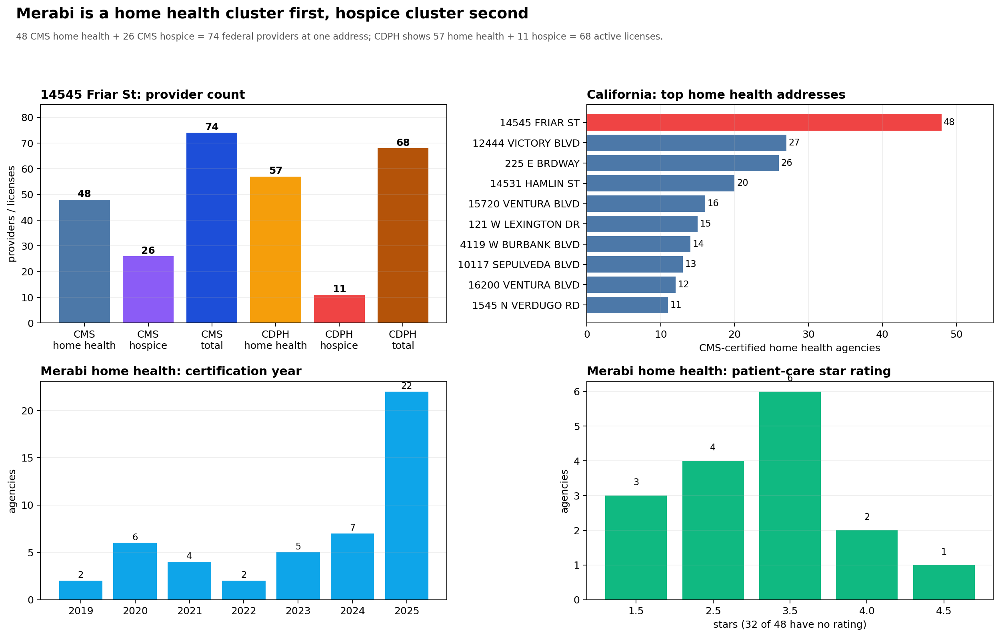
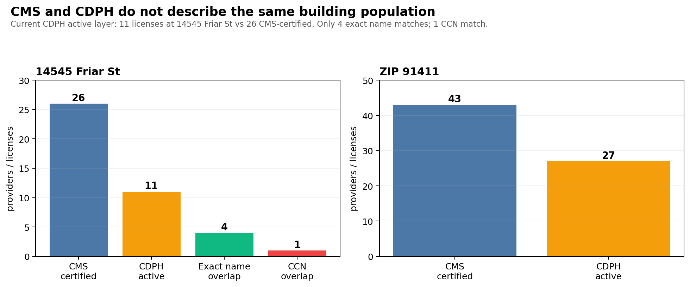
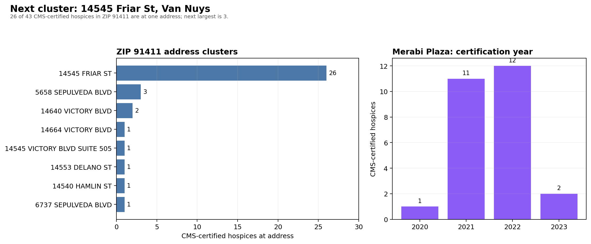
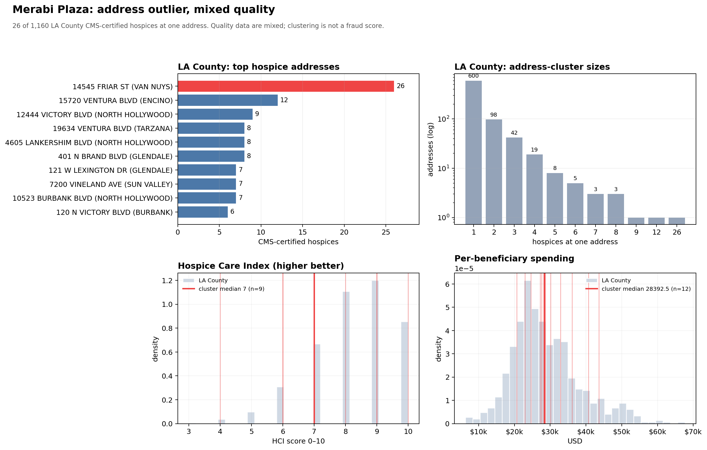

California · aggregate charts
A home health cluster first, hospice cluster second. These charts are aggregate only; candidate names and exact predicates are private.
| measure | value | note |
|---|---|---|
| CMS home health agencies | 48 | 47 Van Nuys + 1 Sherman Oaks |
| CMS hospices | 26 | largest hospice address cluster in LA County |
| CMS federal providers | 74 | 48 + 26 |
| CDPH home health licenses | 57 | current active layer |
| CDPH hospice licenses | 11 | current active layer |
| CDPH active total | 68 | 57 + 11 |
| Public reported count | 89 | not a current hospice count |
| CMS hospices with no exact-name CDPH record | 22 | licensing-gap candidate, not proof |
| 2024 Medicare PUF matched | 17 / 26 | $17.6M to 706 beneficiaries |




They do not show that any provider billed for services it did not deliver, that any owner controlled another provider, or that the building is unlicensed. They show a cluster and a set of reconciliation gaps that require records.
Sources: CMS Hospice – General Information (Aug 2026); CMS Home Health Care Agencies (Oct 2026); CMS Hospice Provider Data (Aug 2026); CMS PAC Hospice PUF (2024); CDPH/CalHealthFind (Oct 2026); LA County Assessor (Oct 2026).